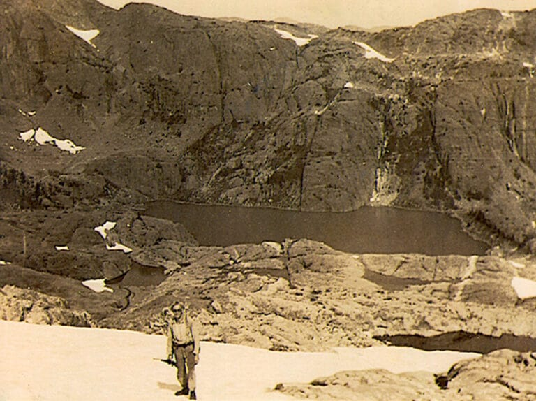
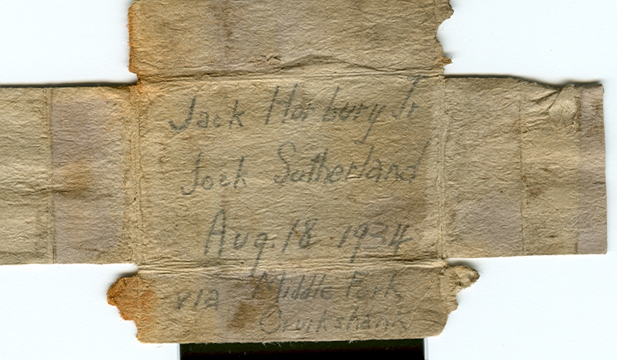
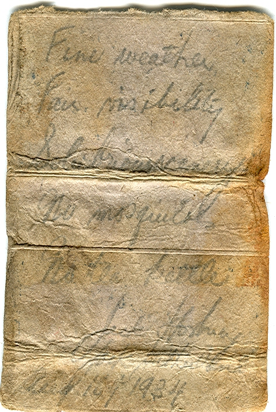
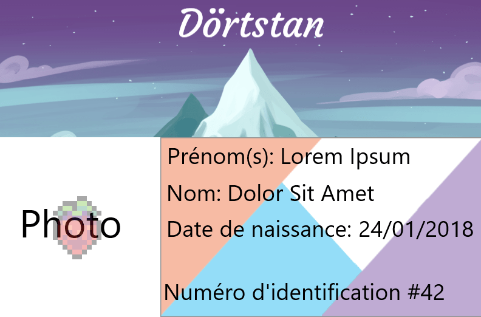
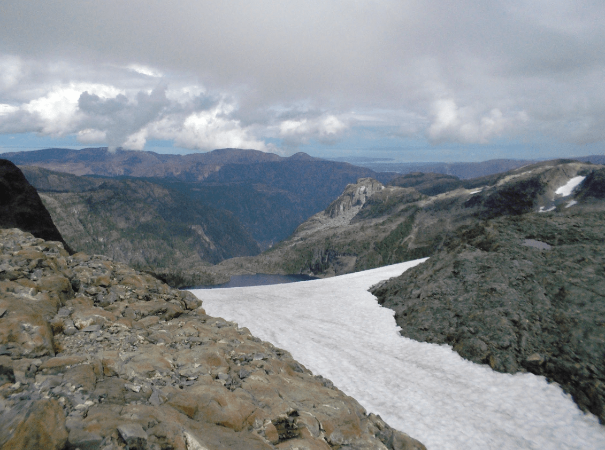
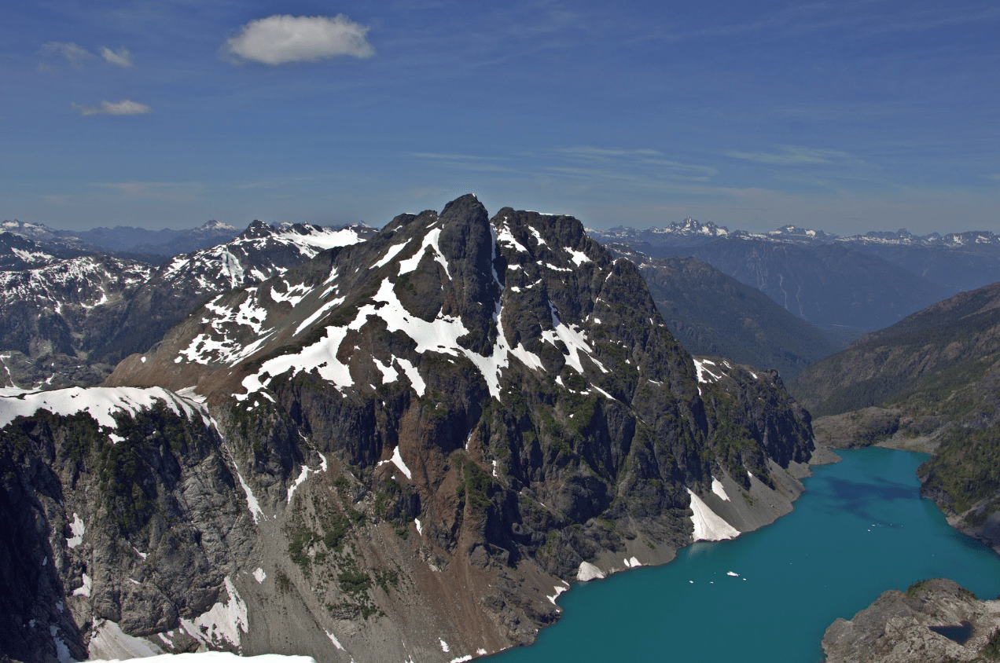
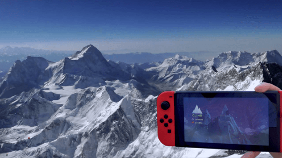

The history of Dörtstan is quite recent, Mt Celeste was actually climbed for the first time only in 1934, on August 18 to be more precise, by Jack Horbury and Jock Sutherland. Their ascent began from the north, passing through Ink Lake as evidenced by this photo of Jock Sutherland taken near the lake.
Photo provided by Bill Bell
After reaching the summit, the two explorers left notes to indicate their passage.
Photos provided by Lindsay Elms
On the left "Jack Horbury - Jock Sutherland - Aug.18.1934 - by the Middle Fork - Cruikshank" With the help of those informations we know that they came via the Cruikshank River to the east and passed through the Middle Fork. On the right, we are informed about the weather conditions with "fine weather" and "fair visibility".It was on January 24, 2018, that our nation was officially created. A few months later, on October 25, the Canadian government recognized our territory as a reserve for the citizens of Dörtstan and granted us the power to exercise our jurisdiction within our borders. Today our borders are open and everyone can move freely, and anyone wishing to do so can apply for Dörtstanian citizenship by sending an email to dortstan-gouv@proton.me.
Example of an id card
The list of all citizens is available ->here<-Here are some recent photos of Dörtstan
View of the Memory Lake from the Rees Ridge south of the summit
View of Millia Lake from Mount Arthur Evans
Celeste enthusiast reaching the summit